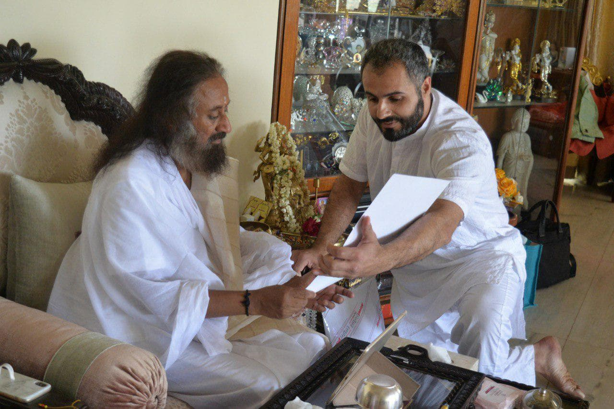
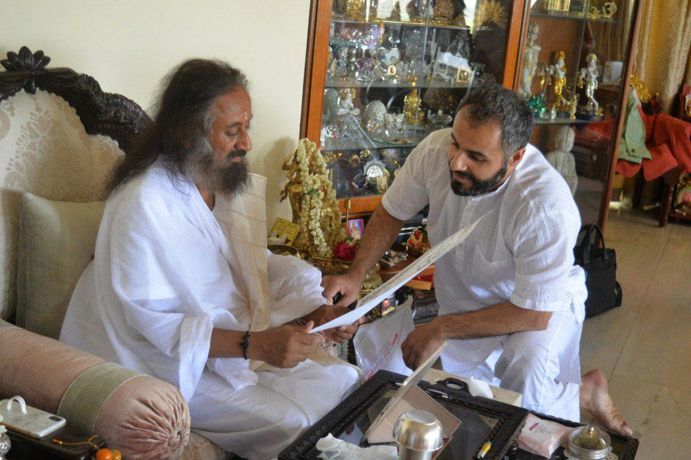

Sri Sri Ravi Shankar held a meeting with Dr.Artur Aloyan, a president of Kagayaku Karate World Federation. March 2019

Thanks to the educational activities of karate all over the world and the joint development of Indian karate, there was a very high-level meeting between Sri Sri Ravi Shankar and Doctor Artur Aloyan — a president of Kagayaku Karate World Federation.
- Sri Sri Ravi Shankar:
- a peacemaker uniting millions of people around the world, regardless of their nationality or religion,
- the founder of the Art of Living Foundation, a volunteer — based NGO providing social support to the people,
- the establisher a Geneva-based charity, the International Association for Human Values.
It is significant that the meeting took place in India — the cradle of any martial arts.
Kagayaku Karate World Federation express our deepest gratitude for the warm welcome, and we say thanks to Sri Sri Ravi Shankar with a great respect for the trust placed in us. As a result of the meeting in Art of Living Center, we were convinced that the course chosen by the Kagayaku Karate World Federation is absolutely correct. Kagayaku Karate continues to contribute by advocating for universal human values, drug prevention, promoting healthy lifestyles, and health, countering gender-based violence.
↩ Back